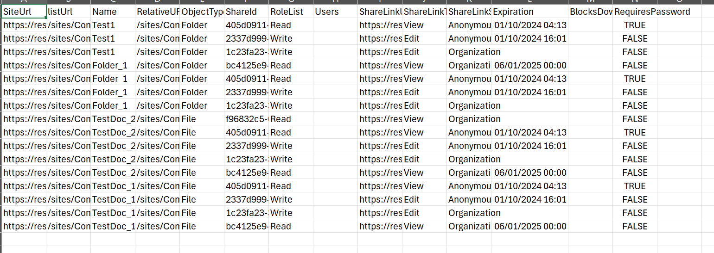

Deletes company-wide and anonymous sharing links
Summary
Sharing links can lead to oversharing, especially when default site sharing settings haven’t been updated to ‘People with existing access’. If default sharing options are not updated in the tenant or site, end users can easily create a company wide or anonymous sharing links with a single click. End users can make a conscious decision to create sharing links with specific "people you choose" which limits the audience having access to the data. This script can help delete those company-wide and anonymous sharing links at folder, file, and item levels. This approach can help mitigate oversharing issues during the M365 Copilot rollout.

Prerequisites
- The user account that runs the script must have at least site owner role to the SharePoint Online site.
param(
[Parameter(Mandatory)]
[ValidateSet('Yes','No')]
[string]$ExcludeDirectSharingLink,#anonymous and company wide links are included by default and this provides an option to include the "People You choose" links in the deletio process.
[Parameter(Mandatory)]
[ValidateSet('Yes','No')]
[string]$DeleteSharingink,
[Parameter(Mandatory)]
[string]$SiteUrl
)
#Parameters
$dateTime = (Get-Date).toString("dd-MM-yyyy-hh-ss")
$invocation = (Get-Variable MyInvocation).Value
$directorypath = Split-Path $invocation.MyCommand.Path
$fileName = "SharedLinksDeletion-" + $dateTime + ".csv"
$ReportOutput = $directorypath + "\Logs\"+ $fileName
$global:Results = @();
$siteUrl = if ($siteUrl[-1] -ne '/') { $siteUrl + '/' } else { $siteUrl }
function getSharingLink($_object,$_type,$_siteUrl,$_listUrl)
{
$relativeUrl = $_object.FileRef
$SharingLinks = if ($_type -eq 0 ) {
Get-PnPFileSharingLink -Identity $relativeUrl
} elseif ($_type -eq 1) {
Get-PnPFolderSharingLink -Folder $relativeUrl
}
ForEach($ShareLink in $SharingLinks)
{
if(($ExcludeDirectSharingLink -eq 'Yes' -and $ShareLink.Link.Scope -ne 'Users') -or $ExcludeDirectSharingLink -eq 'No')
{
$result = New-Object PSObject -property $([ordered]@{
SiteUrl = $_SiteURL
listUrl = $_listUrl
Name = $_object.FileLeafRef
RelativeURL = $_object.FileRef
ObjectType = $_Type -eq 1 ? 'Folder':'File'
ShareId = $ShareLink.Id
RoleList = $ShareLink.Roles -join "|"
Users = $ShareLink.GrantedToIdentitiesV2.User.Email -join "|"
ShareLinkUrl = $ShareLink.Link.WebUrl
ShareLinkType = $ShareLink.Link.Type
ShareLinkScope = $ShareLink.Link.Scope
Expiration = $ShareLink.ExpirationDateTime
BlocksDownload = $ShareLink.Link.PreventsDowload
RequiresPassword = $ShareLink.HasPassword
})
$global:Results +=$result;
if($DeleteSharingink -eq 'Yes'){
if ($_type -eq 0 ) {
Remove-PnPFileSharingLink -FileUrl $relativeUrl -Identity $ShareLink.Id -Force
} elseif ($_type -eq 1) {
Remove-PnPFolderSharingLink -Folder $relativeUrl -Identity $ShareLink.Id -Force
}
}
}
}
}
#Exclude certain libraries/lists
$ExcludedLists = @("Access Requests", "App Packages", "appdata", "appfiles","Apps for SharePoint" ,"Apps in Testing", "Cache Profiles", "Composed Looks", "Content and Structure Reports", "Content type publishing error log", "Converted Forms",
"Device Channels", "Form Templates", "fpdatasources", "Get started with Apps for Office and SharePoint", "List Template Gallery", "Long Running Operation Status", "Maintenance Log Library", "Images", "site collection images"
, "Master Docs", "Master Page Gallery", "MicroFeed", "NintexFormXml", "Quick Deploy Items", "Relationships List", "Reusable Content", "Reporting Metadata", "Reporting Templates", "Search Config List", "Site Assets", "Preservation Hold Library",
"Site Pages", "Solution Gallery", "Style Library", "Suggested Content Browser Locations", "Theme Gallery", "TaxonomyHiddenList", "User Information List", "Web Part Gallery", "wfpub", "wfsvc", "Workflow History", "Workflow Tasks", "Pages")
Connect-PnPOnline -Url $siteUrl -Interactive
Write-Host "Processing site $siteUrl" -Foregroundcolor "Red";
$ll = Get-PnPList -Includes BaseType, Hidden, Title,HasUniqueRoleAssignments,RootFolder | Where-Object {$_.Hidden -eq $False -and $_.Title -notin $ExcludedLists } #$_.BaseType -eq "DocumentLibrary"
Write-Host "Number of lists $($ll.Count)";
foreach($list in $ll)
{
$listUrl = $list.RootFolder.ServerRelativeUrl;
$selectFields = "ID,HasUniqueRoleAssignments,FileRef,FileLeafRef,FileSystemObjectType"
$Url = $siteUrl + '_api/web/lists/getbytitle(''' + $($list.Title) + ''')/items?$select=' + $($selectFields)
$nextLink = $Url
$ListItems = @()
while($nextLink){
$response = invoke-pnpsprestmethod -Url $nextLink -Method Get
$ListItems += $response.value | where-object{$_.HasUniqueRoleAssignments -eq $true}
if($response.'odata.nextlink'){
$nextLink = $response.'odata.nextlink' -replace "$siteUrl/_api/",""
} else{
$nextLink = $null
}
}
ForEach($item in $ListItems)
{
if($list.BaseType -eq "DocumentLibrary")
{
$type= $item.FileSystemObjectType;
}
getSharingLink $item $type $siteUrl $listUrl;
}
}
$global:Results | Export-CSV $ReportOutput -NoTypeInformation
Write-host -f Green "Sharing Links Report Generated Successfully! to $ReportOutput"
Check out the PnP PowerShell to learn more at: https://aka.ms/pnp/powershell
The way you login into PnP PowerShell has changed please read PnP Management Shell EntraID app is deleted : what should I do ?
Source Credit
Sample first appeared on Deletion of company-wide and anonymous sharing links with PowerShell
Contributors
| Author(s) |
|---|
| Reshmee Auckloo |
Disclaimer
THESE SAMPLES ARE PROVIDED AS IS WITHOUT WARRANTY OF ANY KIND, EITHER EXPRESS OR IMPLIED, INCLUDING ANY IMPLIED WARRANTIES OF FITNESS FOR A PARTICULAR PURPOSE, MERCHANTABILITY, OR NON-INFRINGEMENT.